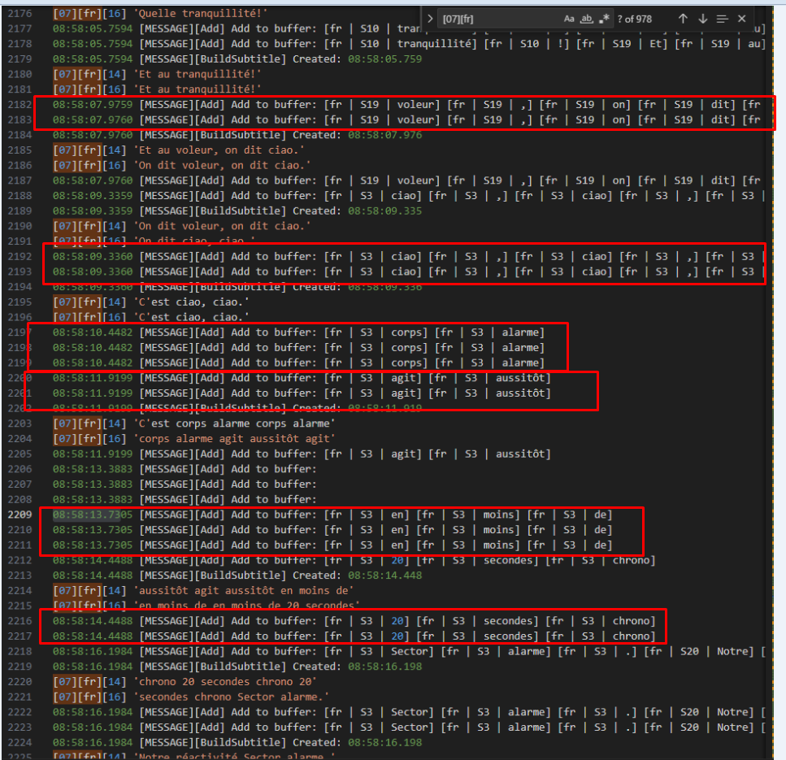
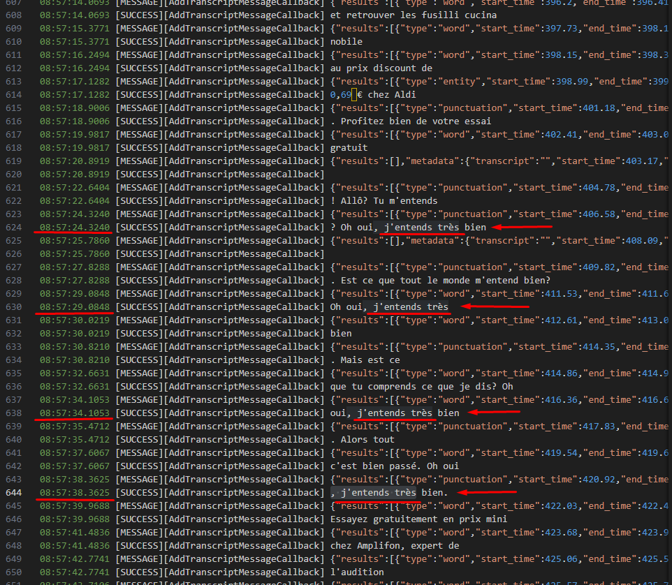

stl version v3.8.6.0
Date: 2024.09.11
Issues in Milestone
---
- #27 If the word is a punctuation symbol and is added to the beginning of the line, skip this word
- #28 Add settings for Newfor and change Newfor building
- #32 Fix thread race condition when adding words to the words buffer
Features
---
If the word is a punctuation symbol and is added to the beginning of the line, skip this word
To prevent a subtitle line from starting with a punctuation mark such as `. , ! ? ;`, the symbol will not be included in the subtitle if it is at the beginning of a new line.
Before:
[18] , ailleurs.
[20] Voilà une matinée un peu plus calme,
After:
[18] ailleurs.
[20] Voilà une matinée un peu plus calme,
Add settings for Newfor and change Newfor building
Changed settings file `ApplicationSettings.json`
1. Added parameter `subtitle_line_length` which defines the maximum number of characters in a subtitle line
2. Added section `newfor` for configuring Newfor building. Section `newfor` contains two parameters
- `max_bytes_for_line` Defines the maximum number of bytes for a Newfor line
- `is_use_length_37` Parameter that determines whether or not to remove the system byte 0x0A from the line if the number of bytes is greater than `max_bytes_for_line`+1.
Changed convertation subtitle to Newfor subtitle.
If a subtitle line longer than the number of bytes specified in `newfor.max_bytes_for_line` is received for conversion to Newfor, we do the following:
1. If there are more bytes in the Newfor line than specified in the `newfor.max_bytes_for_line` settings - We do not specify the system byte `0x0D` AND set line length to `newfor.max_bytes_for_line` + 1
2. If there are more than `newfor.max_bytes_for_line` + 1 AND `newfor.is_use_length_37` is True - We do not specify the system byte 0x0A AND set line length to `newfor.max_bytes_for_line` + 2
So that max line length might be `newfor.max_bytes_for_line` + 2
Examples:
`newfor.max_bytes_for_line`: 35
`newfor.is_use_length_37`: True
2 lines:
1th line length: 36
Text: Test-1Test-1Test-1Test-1Test-1Test-1
Number: 10
Color: 0
Text: Test-2
Number: 12
Color: 3
Newfor:
8F 8C 15 8C 00 0B 0B 54 65 73 74 2D 31 54 65 73 74 2D 31 54 65 73 74 2D 31 54 65 73 74 2D 31 54 65 73 74 2D 31 54 65 73 74 2D 31 0A 15 A1 0D 03 0B 0B 54 65 73 74 2D 32 20 20 20 20 20 20 20 20 20 20 20 20 20 20 20 20 20 20 20 20 20 20 20 20 20 20 20 20 20 0A 10
2 lines:
1th line length: 37
Text: Test-1Test-1Test-1Test-1Test-1Test-11
Number: 10
Color: 0
Text: Test-2
Number: 12
Color: 3
Newfor:
8F 8C 15 8C 00 0B 0B 54 65 73 74 2D 31 54 65 73 74 2D 31 54 65 73 74 2D 31 54 65 73 74 2D 31 54 65 73 74 2D 31 54 65 73 74 2D 31 31 15 A1 0D 03 0B 0B 54 65 73 74 2D 32 20 20 20 20 20 20 20 20 20 20 20 20 20 20 20 20 20 20 20 20 20 20 20 20 20 20 20 20 20 0A 10")]
2 lines:
1th line length: 39
Text: Test-1Test-1Test-1Test-1Test-1Test-1111
Number: 10
Color: 0
Text: Test-2
Number: 12
Color: 3
Newfor:
8F 8C 15 8C 00 0B 0B 54 65 73 74 2D 31 54 65 73 74 2D 31 54 65 73 74 2D 31 54 65 73 74 2D 31 54 65 73 74 2D 31 54 65 73 74 2D 31 31 15 A1 0D 03 0B 0B 54 65 73 74 2D 32 20 20 20 20 20 20 20 20 20 20 20 20 20 20 20 20 20 20 20 20 20 20 20 20 20 20 20 20 20 0A 10")]
2 lines:
Text: Test-1
Number: 10
Color: 0
Text: Test-2
Number: 12
Color: 3
Newfor:
8F 8C 15 8C 0D 00 0B 0B 54 65 73 74 2D 31 20 20 20 20 20 20 20 20 20 20 20 20 20 20 20 20 20 20 20 20 20 20 20 20 20 20 20 20 20 0A 15 A1 0D 03 0B 0B 54 65 73 74 2D 32 20 20 20 20 20 20 20 20 20 20 20 20 20 20 20 20 20 20 20 20 20 20 20 20 20 20 20 20 20 0A 10
1 line:
Text: Test
Number: 10
Color: 0
Newfor:
8F C7 15 8C 0D 00 0B 0B 54 65 73 74 20 20 20 20 20 20 20 20 20 20 20 20 20 20 20 20 20 20 20 20 20 20 20 20 20 20 20 20 20 20 20 0A 10
Settings file `ApplicationSettings.json`:
{
"grpc_service_ip": "127.0.0.1",
"grpc_service_port": 9740,
"subtitles_timeout_ms": 2000,
"subtitle_lines": "8,14",
"subtitle_start_mode": 1,
"subtitle_write_mode": [0],
"subtitle_srt_path": "./tmp/subtitle.srt",
"subtitle_latest_path": "./tmp/latest.sub",
"subtitle_gen_line_mode": 0,
"subtitle_extract_attempts": 0,
"subtitle_line_length": 35,
"newfor": {
"max_bytes_for_line": 35,
"is_use_length_37": true
}
}
- *subtitle_start_mode** - defines the application operating mode.
1 - Transcription starts automatically after the service starts.
In this case, the transcription language is taken from a file `SpeechmaticsSettings.json` `speechmatics.language`
- *subtitle_write_mode** - Choose what to do with the received transcriptions. It should be sequence of numbers separated by commas.
1: Write to file as SRT
2: Write to file as plain text the latest subtitle
- *subtitle_srt_path** - if subtitle_write_mode is 1, this is the path to the SRT file
- *subtitle_gen_line_mode** - When all lines for subtitle is full - for the next subtitle
1 - Remove all lines. We wait until all the lines are filled in
- *subtitle_extract_attempts** - specifies the number of iterations that will wait for the Transcription
- *subtitle_line_length** - Defines the maximum number of characters in a subtitle line
- *newfor.max_bytes_for_line** - Defines the maximum number of bytes for a Newfor line
- *newfor.is_use_length_37** - Parameter that determines whether or not to remove the system byte 0x0A from the line if the number of bytes is greater than `max_bytes_for_line`+1.
Fix thread race condition when adding words to the words buffer
After some time of the service's operation, duplication of streams occurred, due to which repeated words and phrases appeared that were not in the original stream.
 